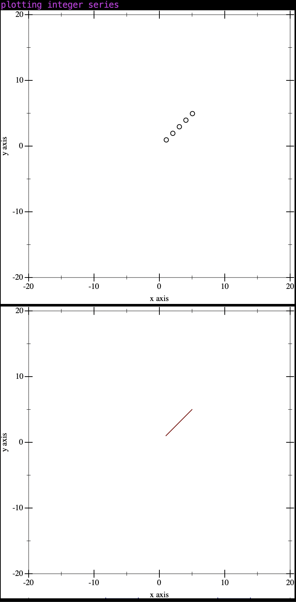
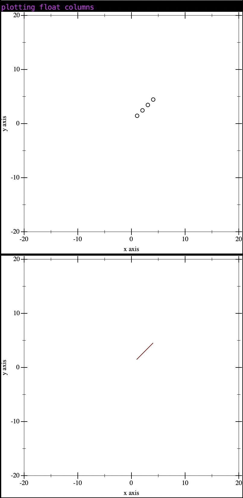
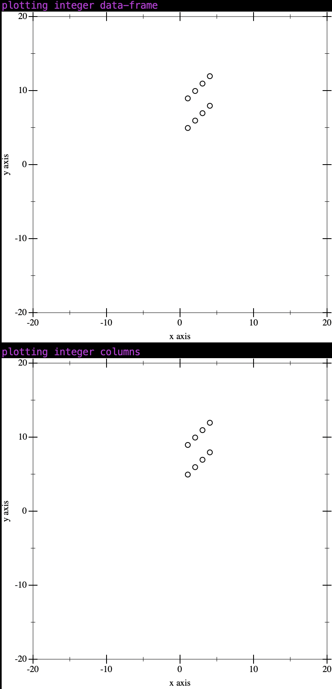

RacketFrames
→ A DataFrame implementation in the spirit of Pandas or R data frames.
→ In this day and age procedural and functional programmers alike are working with large amounts of data. Many analytical libraries have been developed for many domains to work with such data. Python/Pandas, R or even the command prompt can be used to accomplish theses tasks, but this option is especially good if you are 1) using Racket already 2) may need to integrate your solution with other Racket applications in the future or 3) just plain love functional programming.
(require RacketFrames) (define columns-mix (list (cons 'integer-col (new-ISeries (vector 1 2 3 4) (build-index-from-list (list 'a 'b 'c 'd)))) (cons 'categorical-col (new-CSeries (vector 'hello 'world 'fizz 'buzz) (build-index-from-list (list 'a 'b 'c 'd)))))) ; create new data-frame-mix (define data-frame-mix (new-data-frame columns-mix)) (data-frame-write-tab data-frame-mix (current-output-port)) ; no schema (define salary-data-frame-csv-no-schema (load-csv-file "../sample-csv/salary_date.csv" #:schema #f)) (data-frame-head salary-data-frame-csv-no-schema) (print salary-data-frame-csv-no-schema) (displayln "DataFrame List of Column Names") (data-frame-names salary-data-frame-csv-no-schema) (displayln "DataFrame Dimensions") (data-frame-dim salary-data-frame-csv-no-schema) (displayln "DataFrame Description") (show-data-frame-description (data-frame-description salary-data-frame-csv-no-schema)) (displayln "DataFrame Remove") (data-frame-head (data-frame-remove salary-data-frame-csv-no-schema (list 'first 'age))) (displayln "DataFrame Project") (data-frame-head (data-frame-project salary-data-frame-csv-no-schema (list 'first 'last 'dollar))) (displayln "DataFrame Replace") (data-frame-head (data-frame-replace salary-data-frame-csv-no-schema (cons 'salary (new-CSeries (make-vector 200 '$0.00) #f)))) (displayln "DataFrame Replace Non Existent Column") (data-frame-head (data-frame-replace salary-data-frame-csv-no-schema (cons 'dollar (new-CSeries (make-vector 200 '$0.00) #f)))) (displayln "DataFrame Extend") (data-frame-head (data-frame-extend salary-data-frame-csv-no-schema (cons 'state (new-CSeries (make-vector 200 'CA) #f))))
Table of Contents
1 Series
One-dimensional ndarray with axis labels (including time series).
Labels need not be unique but must be a hashable type. The object supports both integer- and label-based indexing and provides a host of methods for performing operations involving the index. Statistical methods from ndarray have been overridden to automatically exclude missing data (currently represented as NaN).
Operations between Series (+, -, /, , *) align values based on their associated index values– they need not be the same length. The result index will be the sorted union of the two indexes.
1.1 Integer Series
1.1.1 new-ISeries
procedure
(new-ISeries data label) → ISeries?
data : (Vectorof Fixnum) label : (Option (U (Listof Label) SIndex))
(define series-integer (new-ISeries (vector 1 2 3 4) (build-index-from-labels (list 'a 'b 'c 'd))))
1.1.2 iseries-iref
procedure
(iseries-iref iseries idx) → Fixnum?
iseries : ISeries idx : Index
(define series-integer (new-ISeries (vector 1 2 3 4) (build-index-from-labels (list 'a 'b 'c 'd)))) (iseries-iref series-integer 0) ; 1 (iseries-iref series-integer 1) ; 2
1.1.3 iseries-label-ref
procedure
(iseries-label-ref iseries label) → Fixnum?
iseries : ISeries label : Label
(define series-integer (new-ISeries (vector 1 2 3 4) (build-index-from-labels (list 'a 'b 'c 'd)))) (iseries-label-ref series-integer 'd) ; 4 (iseries-label-ref series-integer 'c) ; 3
1.1.4 iseries-range
procedure
(iseries-range iseries pos) → (Vectorof Fixnum)
iseries : ISeries pos : Index
(define series-integer (new-ISeries (vector 1 2 3 4) (build-index-from-labels (list 'a 'b 'c 'd)))) (iseries-range series-integer 2) ; (vector 1 2)
1.1.5 iseries-length
procedure
(iseries-length iseries) → Index
iseries : ISeries
(define series-integer (new-ISeries (vector 1 2 3 4) (build-index-from-labels (list 'a 'b 'c 'd)))) (iseries-length series-integer) ; 4
(ISeries -> (Index -> Fixnum)
1.1.6 iseries-referencer
procedure
(iseries-referencer iseries) → (Index -> Fixnum)
iseries : ISeries
(define series-integer (new-ISeries (vector 1 2 3 4) (build-index-from-labels (list 'a 'b 'c 'd)))) ((iseries-referencer series-integer) 0) ; 1 ((iseries-referencer series-integer) 1) ; 2
1.1.7 iseries-data
procedure
(iseries-data iseries) → (Vectorof Fixnum)
iseries : ISeries
(define series-integer (new-ISeries (vector 1 2 3 4) (build-index-from-labels (list 'a 'b 'c 'd)))) (iseries-data series-integer) ; (vector 1 2 3 4)
[map/is (ISeries (Fixnum -> Fixnum) -> ISeries)] [bop/is (ISeries ISeries (Fixnum Fixnum -> Fixnum) -> ISeries)] [comp/is (ISeries ISeries (Fixnum Fixnum -> Boolean) -> BSeries)]
1.1.8 map/is
procedure
(map/is iseries fn) → ISeries
iseries : ISeries fn : (Fixnum -> Fixnum)
(define series-integer (new-ISeries (vector 1 2 3 4) (build-index-from-labels (list 'a 'b 'c 'd)))) (ISeries-data (map/is series-integer (λ: ((x : Fixnum)) (unsafe-fx+ x 1)))) ; (vector 2 3 4 5)
1.1.9 bop/is
(ISeries ISeries (Fixnum Fixnum -> Fixnum) -> ISeries)
procedure
(bop/is iseries iseries-2 fn) → ISeries
iseries : ISeries iseries-2 : ISeries fn : (Fixnum Fixnum -> Fixnum)
(define series-integer (new-ISeries (vector 1 2 3 4) #f)) (define series-integer-2 (new-ISeries (vector 5 6 7 8) #f)) (ISeries-data (bop/is series-integer series-integer-2 (λ: ((x : Fixnum) (y : Fixnum)) (unsafe-fx+ x y)))) ; (new-ISeries 6 8 10 12)
1.1.10 comp/is
procedure
(comp/is iseries iseries-2 fn) → BSeries
iseries : ISeries iseries-2 : ISeries fn : (Fixnum Fixnum -> Boolean)
(define series-integer (new-ISeries (vector 1 2 3 4) #f)) (define series-integer-2 (new-ISeries (vector 5 6 7 8) #f)) (ISeries-data (comp/is series-integer series-integer-2 (λ: ((x : Fixnum) (y : Fixnum)) (unsafe-fx> x y)))) ; (new-BSeries #f #f #f #f)
1.1.11 +/is
procedure
(+/is iseries iseries-2) → ISeries
iseries : ISeries iseries-2 : ISeries
(define series-integer (new-ISeries (vector 1 2 3 4) #f)) (define series-integer-2 (new-ISeries (vector 5 6 7 8) #f)) (ISeries-data (+/is series-integer series-integer-2)) ; (vector 6 8 10 12)
1.1.12 -/is
procedure
(+/is iseries iseries-2) → ISeries
iseries : ISeries iseries-2 : ISeries
(define series-integer (new-ISeries (vector 1 2 3 4) #f)) (define series-integer-2 (new-ISeries (vector 5 6 7 8) #f)) (ISeries-data (-/is series-integer series-integer-2)) ; (vector -4 -4 -4 -4)
1.1.13 */is
procedure
(*/is iseries iseries-2) → ISeries
iseries : ISeries iseries-2 : ISeries
(define series-integer (new-ISeries (vector 1 2 3 4) #f)) (define series-integer-2 (new-ISeries (vector 5 6 7 8) #f)) (ISeries-data (*/is series-integer series-integer-2)) ; (vector 5 12 21 32)
1.1.14 //is
procedure
(//is iseries iseries-2) → ISeries
iseries : ISeries iseries-2 : ISeries
(define series-integer (new-ISeries (vector 1 2 3 4) #f)) (define series-integer-2 (new-ISeries (vector 5 6 7 8) #f)) (ISeries-data (//is series-integer series-integer-2)) ; (vector 0 0 0 0)
1.1.15 %/is
procedure
(%/is iseries iseries-2) → ISeries
iseries : ISeries iseries-2 : ISeries
(define series-integer (new-ISeries (vector 1 2 3 4) #f)) (define series-integer-2 (new-ISeries (vector 5 6 7 8) #f)) (ISeries-data (%/is series-integer series-integer-2)) ; (vector 1 2 3 4)
1.1.16 r/is
procedure
(r/is iseries iseries-2) → ISeries
iseries : ISeries iseries-2 : ISeries
(define series-integer (new-ISeries (vector 1 2 3 4) #f)) (define series-integer-2 (new-ISeries (vector 5 6 7 8) #f)) (ISeries-data (r/is series-integer series-integer-2)) ; (vector 1 2 3 4)
1.1.17 +./is
procedure
(+./is iseries num) → ISeries
iseries : ISeries num : Fixnum
(define series-integer (new-ISeries (vector 1 2 3 4) #f)) (ISeries-data (+./is series-integer 2)) ; (vector 3 4 5 6)
1.1.18 -./is
procedure
(-./is iseries num) → ISeries
iseries : ISeries num : Fixnum
(define series-integer (new-ISeries (vector 1 2 3 4) #f)) (ISeries-data (-./is series-integer 2)) ; (vector -1 0 1 2)
1.1.19 *./is
procedure
(*./is iseries num) → ISeries
iseries : ISeries num : Fixnum
(define series-integer (new-ISeries (vector 1 2 3 4) #f)) (ISeries-data (*./is series-integer 2)) ; (vector 2 3 6 8)
1.1.20 /./is
procedure
(/./is iseries num) → ISeries
iseries : ISeries num : Fixnum
(define series-integer (new-ISeries (vector 1 2 3 4) #f)) (ISeries-data (/./is series-integer 2)) ; (vector 0 1 1 2)
1.1.21 %./is
procedure
(%./is iseries num) → ISeries
iseries : ISeries num : Fixnum
(define series-integer (new-ISeries (vector 1 2 3 4) #f)) (ISeries-data (%./is series-integer 2)) ; (vector 1 0 1 0)
1.1.22 r./is
procedure
(r./is iseries num) → ISeries
iseries : ISeries num : Fixnum
(define series-integer (new-ISeries (vector 1 2 3 4) #f)) (ISeries-data (r./is series-integer 2)) ; (vector 1 0 1 0)
1.1.23 >/is
procedure
(>/is iseries iseries-2) → BSeries
iseries : ISeries iseries-2 : ISeries
(define series-integer (new-ISeries (vector 1 2 3 4) #f)) (define series-integer-2 (new-ISeries (vector 5 6 7 8) #f)) (BSeries-data (>/is series-integer series-integer-2)) ; (vector #f #f #f #f)
1.1.24 </is
procedure
(</is iseries iseries-2) → BSeries
iseries : ISeries iseries-2 : ISeries
(define series-integer (new-ISeries (vector 1 2 3 4) #f)) (define series-integer-2 (new-ISeries (vector 5 6 7 8) #f)) (BSeries-data (</is series-integer series-integer-2)) ; (vector #f #f #f #f)
1.1.25 >=/is
procedure
(>=/is iseries iseries-2) → BSeries
iseries : ISeries iseries-2 : ISeries
(define series-integer (new-ISeries (vector 1 2 3 4) #f)) (define series-integer-2 (new-ISeries (vector 5 6 7 8) #f)) (BSeries-data (>=/is series-integer series-integer-2)) ; (vector #f #f #f #f)
1.1.26 <=/is
procedure
(<=/is iseries iseries-2) → BSeries
iseries : ISeries iseries-2 : ISeries
(define series-integer (new-ISeries (vector 1 2 3 4) #f)) (define series-integer-2 (new-ISeries (vector 5 6 7 8) #f)) (BSeries-data (<=/is series-integer series-integer-2)) ; (vector #t #t #t #t)
1.1.27 =/is
procedure
(=/is iseries iseries-2) → BSeries
iseries : ISeries iseries-2 : ISeries
(define series-integer (new-ISeries (vector 1 2 3 4) #f)) (define series-integer-2 (new-ISeries (vector 5 6 7 8) #f)) (BSeries-data (=/is series-integer series-integer-2)) ; (vector #f #f #f #f)
1.1.28 !=/is
procedure
(!=/is iseries iseries-2) → BSeries
iseries : ISeries iseries-2 : ISeries
(define series-integer (new-ISeries (vector 1 2 3 4) #f)) (define series-integer-2 (new-ISeries (vector 5 6 7 8) #f)) (BSeries-data (!=/is series-integer series-integer-2)) ; (vector #t #t #t #t)
1.1.29 apply-agg-is
procedure
(apply-agg-is func iseries) → Real
func : Symbol iseries : ISeries
(define series-integer (new-ISeries (vector 1 2 3 4) #f)) (apply-agg-is 'sum series-integer) ; 10 (apply-agg-is 'mean series-integer) ; 10/4 (apply-agg-is 'count series-integer) ; 4 (apply-agg-is 'min series-integer) ; 1 (apply-agg-is 'max series-integer) ; 4
1.1.30 apply-stat-is
procedure
(apply-stat-is func iseries) → Real
func : Symbol iseries : ISeries
(define series-integer (new-ISeries (vector 1 2 3 4) #f)) (apply-stat-is 'variance series-integer) ; 5/4 (apply-stat-is 'stddev series-integer) ; 1.118033988749895 (apply-stat-is 'skewness series-integer) ; 0.0
1.2 Numerical Series
1.2.1 new-NSeries
procedure
(new-NSeries data label) → NSeries?
data : (Vectorof Float) label : (Option (U (Lnstof Label) SIndex))
(define series-float (new-NSeries (flvector 1.5 2.4 3.6 4.1) (build-index-from-labels (list 'a 'b 'c 'd))))
1.2.2 nseries-iref
procedure
(nseries-iref nseries idx) → Float?
nseries : NSeries idx : Index
(define series-float (new-NSeries (flvector 1.5 2.4 3.6 4.1) (build-index-from-labels (list 'a 'b 'c 'd)))) (nseries-iref series-float 0) ; 1.5 (nseries-iref series-float 1) ; 2.4
1.2.3 nseries-label-ref
procedure
(nseries-label-ref nseries label) → Float?
nseries : NSeries label : Label
(define series-float (new-NSeries (flvector 1.5 2.4 3.6 4.1) (build-index-from-labels (list 'a 'b 'c 'd)))) (nseries-label-ref series-float 'd) ; 4.1 (nseries-label-ref series-float 'c) ; 3.6
1.2.4 nseries-range
procedure
(nseries-range nseries pos) → (Vectorof Float)
nseries : NSeries pos : Index
(define series-float (new-NSeries (flvector 1.5 2.4 3.6 4.1) (build-index-from-labels (list 'a 'b 'c 'd)))) (nseries-range series-float 2) ; (flvector 1.5 2.4)
1.2.5 nseries-length
procedure
(nseries-length nseries) → Index
nseries : NSeries
(define series-float (new-NSeries (flvector 1.5 2.4 3.6 4.1) (build-index-from-labels (list 'a 'b 'c 'd)))) (nseries-length series-float) ; 4
1.2.6 nseries-referencer
procedure
(nseries-referencer nseries) → (Index -> Float)
nseries : NSeries
(define series-float (new-NSeries (flvector 1.5 2.4 3.6 4.1) (build-index-from-labels (list 'a 'b 'c 'd)))) ((nseries-referencer series-float) 0) ; 1.5 ((nseries-referencer series-float) 1) ; 2.4
1.2.7 nseries-data
procedure
(nseries-data nseries) → (Vectorof Float)
nseries : NSeries
(define series-float (new-NSeries (flvector 1.5 2.4 3.6 4.1) (build-index-from-labels (list 'a 'b 'c 'd)))) (nseries-data series-foat) ; (flvector 1.5 2.4 3.6 4.1)ap
1.2.8 map/ns
procedure
(map/ns nseries fn) → NSeries
nseries : NSeries fn : (Float -> Float)
(define series-float (new-NSeries (flvector 1.5 2.4 3.6 4.1) (build-index-from-labels (list 'a 'b 'c 'd)))) (NSeries-data (map/ns series-float (λ: ((x : Float)) (fl+ x 1.0)))) ; (flvector 2.5 3.4 4.6 5.1)
1.2.9 bop/ns
(NSeries NSeries (Float Float -> Float) -> NSeries)
procedure
(bop/ns nseries nseries-2 fn) → NSeries
nseries : NSeries nseries-2 : NSeries fn : (Float Float -> Float)
(define series-integer (new-NSeries (vector 1 2 3 4) #f)) (define series-integer-2 (new-NSeries (vector 5 6 7 8) #f)) (NSeries-data (bop/ns series-integer series-integer-2 (λ: ((x : Float) (y : Float)) (unsafe-fx+ x y)))) ; (new-NSeries 6 8 10 12)
1.2.10 comp/ns
procedure
(comp/ns nseries nseries-2 fn) → BSeries
nseries : NSeries nseries-2 : NSeries fn : (Float Float -> Boolean)
(define series-integer (new-NSeries (vector 1 2 3 4) #f)) (define series-integer-2 (new-NSeries (vector 5 6 7 8) #f)) (NSeries-data (comp/ns series-integer series-integer-2 (λ: ((x : Float) (y : Float)) (unsafe-fx> x y)))) ; (new-BSeries #f #f #f #f)
1.2.11 +/ns
procedure
(+/ns nseries nseries-2) → NSeries
nseries : NSeries nseries-2 : NSeries
(define series-float (new-NSeries (flvector 1.5 2.4 3.6 4.1) (build-index-from-labels (list 'a 'b 'c 'd)))) (define series-float-2 (new-NSeries (flvector 5.0 6.0 7.0 8.0) (build-index-from-labels (list 'a 'b 'c 'd)))) (NSeries-data (+/ns series-float series-float-2)) ; (flvector 6.5 8.4 10.6 12.1))
1.2.12 -/ns
procedure
(+/ns nseries nseries-2) → NSeries
nseries : NSeries nseries-2 : NSeries
(define series-float (new-NSeries (flvector 1.5 2.4 3.6 4.1) (build-index-from-labels (list 'a 'b 'c 'd)))) (define series-float-2 (new-NSeries (flvector 5.0 6.0 7.0 8.0) (build-index-from-labels (list 'a 'b 'c 'd)))) (NSeries-data (-/ns series-float series-float-2)) ; (flvector -3.5 -3.6 -3.4 -3.9000000000000004)
1.2.13 */ns
procedure
(*/ns nseries nseries-2) → NSeries
nseries : NSeries nseries-2 : NSeries
(define series-float (new-NSeries (flvector 1.5 2.4 3.6 4.1) (build-index-from-labels (list 'a 'b 'c 'd)))) (define series-float-2 (new-NSeries (flvector 5.0 6.0 7.0 8.0) (build-index-from-labels (list 'a 'b 'c 'd)))) (NSeries-data (*/ns series-float series-float-2)) ; (flvector 7.5 14.399999999999999 25.2 32.8)
1.2.14 //ns
procedure
(//ns nseries nseries-2) → NSeries
nseries : NSeries nseries-2 : NSeries
(define series-float (new-NSeries (flvector 1.5 2.4 3.6 4.1) (build-index-from-labels (list 'a 'b 'c 'd)))) (define series-float-2 (new-NSeries (flvector 5.0 6.0 7.0 8.0) (build-index-from-labels (list 'a 'b 'c 'd)))) (NSeries-data (//ns series-float series-float-2)) ; (flvector 0.3 0.39999999999999997 0.5142857142857143 0.5125)
1.2.15 %/ns
procedure
(%/ns nseries nseries-2) → NSeries
nseries : NSeries nseries-2 : NSeries
(define series-integer (new-NSeries (vector 1 2 3 4) #f)) (define series-integer-2 (new-NSeries (vector 5 6 7 8) #f)) (NSeries-data (%/ns series-integer series-integer-2)) ; (vector 1 2 3 4)
1.2.16 r/ns
procedure
(r/ns nseries nseries-2) → NSeries
nseries : NSeries nseries-2 : NSeries
(define series-integer (new-NSeries (vector 1 2 3 4) #f)) (define series-integer-2 (new-NSeries (vector 5 6 7 8) #f)) (NSeries-data (r/ns series-integer series-integer-2)) ; (vector 1 2 3 4)
1.2.17 +./ns
procedure
(+./ns nseries num) → NSeries
nseries : NSeries num : Float
(define series-integer (new-NSeries (vector 1 2 3 4) #f)) (NSeries-data (+./ns series-integer 2)) ; (vector 3 4 5 6)
1.2.18 -./ns
procedure
(-./ns nseries num) → NSeries
nseries : NSeries num : Float
(define series-integer (new-NSeries (vector 1 2 3 4) #f)) (NSeries-data (-./ns series-integer 2)) ; (vector -1 0 1 2)
1.2.19 *./ns
procedure
(*./ns nseries num) → NSeries
nseries : NSeries num : Float
(define series-integer (new-NSeries (vector 1 2 3 4) #f)) (NSeries-data (*./ns series-integer 2)) ; (vector 2 3 6 8)
1.2.20 /./ns
procedure
(/./ns nseries num) → NSeries
nseries : NSeries num : Float
(define series-integer (new-NSeries (vector 1 2 3 4) #f)) (NSeries-data (/./ns series-integer 2)) ; (vector 0 1 1 2)
1.2.21 %./ns
procedure
(%./ns nseries num) → NSeries
nseries : NSeries num : Float
(define series-integer (new-NSeries (vector 1 2 3 4) #f)) (NSeries-data (%./ns series-integer 2)) ; (vector 1 0 1 0)
1.2.22 r./ns
procedure
(r./ns nseries num) → NSeries
nseries : NSeries num : Float
(define series-integer (new-NSeries (vector 1 2 3 4) #f)) (NSeries-data (r./ns series-integer 2)) ; (vector 1 0 1 0)
1.2.23 >/ns
procedure
(>/ns nseries nseries-2) → BSeries
nseries : NSeries nseries-2 : NSeries
(define series-integer (new-NSeries (vector 1 2 3 4) #f)) (define series-integer-2 (new-NSeries (vector 5 6 7 8) #f)) (BSeries-data (>/ns series-integer series-integer-2)) ; (vector #f #f #f #f)
1.2.24 </ns
procedure
(</ns nseries nseries-2) → BSeries
nseries : NSeries nseries-2 : NSeries
(define series-integer (new-NSeries (vector 1 2 3 4) #f)) (define series-integer-2 (new-NSeries (vector 5 6 7 8) #f)) (BSeries-data (</ns series-integer series-integer-2)) ; (vector #f #f #f #f)
1.2.25 >=/ns
procedure
(>=/ns nseries nseries-2) → BSeries
nseries : NSeries nseries-2 : NSeries
(define series-integer (new-NSeries (vector 1 2 3 4) #f)) (define series-integer-2 (new-NSeries (vector 5 6 7 8) #f)) (BSeries-data (>=/ns series-integer series-integer-2)) ; (vector #f #f #f #f)
1.2.26 <=/ns
procedure
(<=/ns nseries nseries-2) → BSeries
nseries : NSeries nseries-2 : NSeries
(define series-integer (new-NSeries (vector 1 2 3 4) #f)) (define series-integer-2 (new-NSeries (vector 5 6 7 8) #f)) (BSeries-data (<=/ns series-integer series-integer-2)) ; (vector #t #t #t #t)
1.2.27 =/ns
procedure
(=/ns nseries nseries-2) → BSeries
nseries : NSeries nseries-2 : NSeries
(define series-integer (new-NSeries (vector 1 2 3 4) #f)) (define series-integer-2 (new-NSeries (vector 5 6 7 8) #f)) (BSeries-data (=/ns series-integer series-integer-2)) ; (vector #f #f #f #f)
1.2.28 !=/ns
procedure
(!=/ns nseries nseries-2) → BSeries
nseries : NSeries nseries-2 : NSeries
(define series-integer (new-NSeries (vector 1 2 3 4) #f)) (define series-integer-2 (new-NSeries (vector 5 6 7 8) #f)) (BSeries-data (!=/ns series-integer series-integer-2)) ; (vector #t #t #t #t)
1.2.29 apply-agg-ns
procedure
(apply-agg-ns func nseries) → Real
func : Symbol nseries : NSeries
(define series-integer (new-NSeries (vector 1 2 3 4) #f)) (apply-agg-ns 'sum series-integer) ; 10 (apply-agg-ns 'mean series-integer) ; 10/4 (apply-agg-ns 'count series-integer) ; 4 (apply-agg-ns 'min series-integer) ; 1 (apply-agg-ns 'max series-integer) ; 4
1.2.30 apply-stat-ns
procedure
(apply-stat-ns func nseries) → Real
func : Symbol nseries : NSeries
(define series-integer (new-NSeries (vector 1 2 3 4) #f)) (apply-stat-ns 'variance series-integer) ; 5/4 (apply-stat-ns 'stddev series-integer) ; 1.118033988749895 (apply-stat-ns 'skewness series-integer) ; 0.0
1.3 Categorical Series
1.3.1 new-CSeries
← This page has no on-this-page panel in a multi-page rendering, because there are no numbered subsections, but it has three levels shown in the table-of-contents panel.
1.4 Boolean Series
1.4.1 new-BSeries
← This page has no on-this-page panel in a multi-page rendering, because there are no numbered subsections, but it has three levels shown in the table-of-contents panel.
1.5 General Series
1.5.1 new-GSeries
← This page has no on-this-page panel in a multi-page rendering, because there are no numbered subsections, but it has three levels shown in the table-of-contents panel.
2 Indexing
The axis labeling information in RacketFrame objects serves many purposes:
Identifies data (i.e. provides metadata) using known indicators, important for analysis, visualization, and interactive console display. Enables automatic and explicit data alignment. Allows intuitive getting and setting of subsets of the data set. In this section, we will focus on the final point: namely, how to slice, dice, and generally get and set subsets of pandas objects. The primary focus will be on Series and DataFrame as they have received more development attention in this area.
2.1 Index
2.1.1 data-frame-loc
← data-frame-loc is primarily label based, but may also be used with a boolean array. data-frame-loc will raise KeyError when the items are not found. Allowed inputs are:
A single label, e.g. 5 or ’a’ (Note that 5 is interpreted as a label of the index. This use is not an integer position along the index.).
A list or array of labels [’a’, ’b’, ’c’].
A slice object with labels ’a’:’f’ (Note that contrary to usual python slices, both the start and the stop are included, when present in the index! See Slicing with labels.).
A boolean array.
A callable function with one argument (the calling Series, DataFrame or Panel) and that returns valid output for indexing (one of the above).
2.1.2 data-frame-iloc
data-frame-iloc is primarily integer position based (from 0 to length-1 of the axis), but may also be used with a boolean array. data-frame-iloc will raise IndexError if a requested indexer is out-of-bounds, except slice indexers which allow out-of-bounds indexing. (this conforms with Python/NumPy slice semantics). Allowed inputs are:
An integer e.g. 5.
A list or array of integers [4, 3, 0].
A slice object with ints 1:7.
A boolean array.
A callable function with one argument (the calling Series, DataFrame or Panel) and that returns valid output for indexing (one of the above).
2.2 MultiIndex
2.3 DateTimeIndex
3 DataFrames
One-dimensional ndarray with axis labels (including time series).
Labels need not be unique but must be a hashable type. The object supports both integer- and label-based indexing and provides a host of methods for performing operations involving the index. Statistical methods from ndarray have been overridden to automatically exclude missing data (currently represented as NaN).
Operations between Series (+, -, /, , *) align values based on their associated index values– they need not be the same length. The result index will be the sorted union of the two indexes.
3.1 DataFrame
3.1.1 new-data-frame
procedure
(new-data-frame columns) → DataFrame?
columns : Columns
;****************** ;data-frame-integer ;****************** ; will define parse to automatically build this columns structure (define columns-integer (list (cons 'col1 (new-ISeries (vector 1 2 3 4) (build-index-from-labels (list 'a 'b 'c 'd)))) (cons 'col2 (new-ISeries (vector 5 6 7 8) (build-index-from-labels (list 'e 'f 'g 'h)))) (cons 'col3 (new-ISeries (vector 9 10 11 12) (build-index-from-labels (list 'i 'j 'k 'l)))))) ; create new data-frame-integer (define data-frame-integer (new-data-frame columns-integer))
3.1.2 data-frame-rename
procedure
(data-frame-rename df col new-col) → DataFrame?
df : DataFrame col : Label new-col : Label
(data-frame-rename)
3.1.3 data-frame-drop
procedure
(data-frame-drop df col-name) → DataFrame?
df : DataFrame col-name : Label
(data-frame-drop)
3.1.4 data-frame-series
procedure
(data-frame-drop df col-name) → Series?
df : DataFrame col-name : Label
(data-frame-series)
3.1.5 data-frame-names
procedure
(data-frame-names df col-name) → Series?
df : DataFrame col-name : Label
(data-frame-names)
3.1.6 data-frame-dim
procedure
(data-frame-dim df) → Dim?
df : DataFrame
(data-frame-dim)
3.1.7 data-frame-description
procedure
(data-frame-description df project) → DataFrameDescription?
df : DataFrame project : LabelProjection
(data-frame-description)
3.1.8 show-data-frame-description
procedure
(show-data-frame-description dfd) → Void?
dfd : DataFrameDescription
(show-data-frame-description)
3.1.9 data-frame-explode
procedure
(data-frame-explode df project) → Columns?
df : DataFrame project : LabelProjection
(data-frame-explode)
3.1.10 data-frame-remove
procedure
(data-frame-remove df project) → DataFrame?
df : DataFrame project : LabelProjection
(data-frame-remove)
3.1.11 data-frame-project
procedure
(data-frame-project df project) → DataFrame?
df : DataFrame project : LabelProjection
(data-frame-project)
3.1.12 data-frame-replace
procedure
(data-frame-replace df col) → DataFrame?
df : DataFrame col : Column
(data-frame-replace)
3.1.13 data-frame-extend
procedure
(data-frame-extend df col) → DataFrame?
df : DataFrame col : (U Column Columns DataFrame)
(data-frame-extend)
3.2 DataFrame Operations
3.2.1 data-frame+
procedure
(data-frame+ dfa dfb) → DataFrame?
dfa : DataFrame dfb : DataFrame
(define columns-integer-1 (list (cons 'col1 (new-ISeries (vector 1 2 3 4) #f)) (cons 'col2 (new-ISeries (vector 5 6 7 8) #f)) (cons 'col3 (new-ISeries (vector 9 10 11 12) #f)) (cons 'col4 (new-ISeries (vector 21 22 23 24) #f)))) (define columns-integer-2 (list (cons 'col1 (new-ISeries (vector 1 2 3 4) #f)) (cons 'col2 (new-ISeries (vector 25 26 27 28) #f)) (cons 'col3 (new-ISeries (vector 29 30 31 32) #f)) (cons 'col4 (new-ISeries (vector 1 2 3 4) #f)))) ; create new data-frame-integer-1 (define data-frame-integer-1 (new-data-frame columns-integer-1)) ; create new data-frame-integer-2 (define data-frame-integer-2 (new-data-frame columns-integer-2)) (displayln "data-frame+") (frame-write-tab data-frame-integer-1 (current-output-port)) (frame-write-tab data-frame-integer-2 (current-output-port)) (frame-write-tab (data-frame+ data-frame-integer-1 data-frame-integer-2) (current-output-port))
3.2.2 data-frame-
procedure
(data-frame- dfa dfb) → DataFrame?
dfa : DataFrame dfb : DataFrame
(define columns-integer-1 (list (cons 'col1 (new-ISeries (vector 1 2 3 4) #f)) (cons 'col2 (new-ISeries (vector 5 6 7 8) #f)) (cons 'col3 (new-ISeries (vector 9 10 11 12) #f)) (cons 'col4 (new-ISeries (vector 21 22 23 24) #f)))) (define columns-integer-2 (list (cons 'col1 (new-ISeries (vector 1 2 3 4) #f)) (cons 'col2 (new-ISeries (vector 25 26 27 28) #f)) (cons 'col3 (new-ISeries (vector 29 30 31 32) #f)) (cons 'col4 (new-ISeries (vector 1 2 3 4) #f)))) ; create new data-frame-integer-1 (define data-frame-integer-1 (new-data-frame columns-integer-1)) ; create new data-frame-integer-2 (define data-frame-integer-2 (new-data-frame columns-integer-2)) (displayln "data-frame-") (frame-write-tab data-frame-integer-1 (current-output-port)) (frame-write-tab data-frame-integer-2 (current-output-port)) (frame-write-tab (data-frame- data-frame-integer-1 data-frame-integer-2) (current-output-port))
3.2.3 data-frame*
procedure
(data-frame* dfa dfb) → DataFrame?
dfa : DataFrame dfb : DataFrame
(define columns-integer-1 (list (cons 'col1 (new-ISeries (vector 1 2 3 4) #f)) (cons 'col2 (new-ISeries (vector 5 6 7 8) #f)) (cons 'col3 (new-ISeries (vector 9 10 11 12) #f)) (cons 'col4 (new-ISeries (vector 21 22 23 24) #f)))) (define columns-integer-2 (list (cons 'col1 (new-ISeries (vector 1 2 3 4) #f)) (cons 'col2 (new-ISeries (vector 25 26 27 28) #f)) (cons 'col3 (new-ISeries (vector 29 30 31 32) #f)) (cons 'col4 (new-ISeries (vector 1 2 3 4) #f)))) ; create new data-frame-integer-1 (define data-frame-integer-1 (new-data-frame columns-integer-1)) ; create new data-frame-integer-2 (define data-frame-integer-2 (new-data-frame columns-integer-2)) (displayln "data-frame*") (frame-write-tab data-frame-integer-1 (current-output-port)) (frame-write-tab data-frame-integer-2 (current-output-port)) (frame-write-tab (data-frame* data-frame-integer-1 data-frame-integer-2) (current-output-port))
3.2.4 data-frame/
procedure
(data-frame/ dfa dfb) → DataFrame?
dfa : DataFrame dfb : DataFrame
(define columns-integer-1 (list (cons 'col1 (new-ISeries (vector 1 2 3 4) #f)) (cons 'col2 (new-ISeries (vector 5 6 7 8) #f)) (cons 'col3 (new-ISeries (vector 9 10 11 12) #f)) (cons 'col4 (new-ISeries (vector 21 22 23 24) #f)))) (define columns-integer-2 (list (cons 'col1 (new-ISeries (vector 1 2 3 4) #f)) (cons 'col2 (new-ISeries (vector 25 26 27 28) #f)) (cons 'col3 (new-ISeries (vector 29 30 31 32) #f)) (cons 'col4 (new-ISeries (vector 1 2 3 4) #f)))) ; create new data-frame-integer-1 (define data-frame-integer-1 (new-data-frame columns-integer-1)) ; create new data-frame-integer-2 (define data-frame-integer-2 (new-data-frame columns-integer-2)) (displayln "data-frame/") (frame-write-tab data-frame-integer-1 (current-output-port)) (frame-write-tab data-frame-integer-2 (current-output-port)) (frame-write-tab (data-frame/ data-frame-integer-1 data-frame-integer-2) (current-output-port))
3.2.5 data-frame%
procedure
(data-frame% dfa dfb) → DataFrame?
dfa : DataFrame dfb : DataFrame
3.2.6 data-frame-r
procedure
(data-frame-r dfa dfb) → DataFrame?
dfa : DataFrame dfb : DataFrame
3.2.7 data-frame=
procedure
(data-frame= dfa dfb) → DataFrame?
dfa : DataFrame dfb : DataFrame
3.2.8 data-frame!=
procedure
(data-frame!= dfa dfb) → DataFrame?
dfa : DataFrame dfb : DataFrame
3.2.9 data-frame<
procedure
(data-frame< dfa dfb) → DataFrame?
dfa : DataFrame dfb : DataFrame
3.2.10 data-frame>
procedure
(data-frame> dfa dfb) → DataFrame?
dfa : DataFrame dfb : DataFrame
3.2.11 data-frame<=
procedure
(data-frame<= dfa dfb) → DataFrame?
dfa : DataFrame dfb : DataFrame
3.2.12 data-frame>=
procedure
(data-frame>= dfa dfb) → DataFrame?
dfa : DataFrame dfb : DataFrame
3.2.13 data-frame-abs
procedure
(data-frame-abs df) → DataFrame?
df : DataFrame
3.3 DataFrame Join
3.3.1 data-frame-join-left
procedure
(data-frame-join-left dfa dfb on) → DataFrame?
dfa : DataFrame dfb : DataFrame on : (Listof Symbol)
(define columns-mixed-7 (list (cons 'col1 (new-ISeries (vector 1 2 3 4) #f)) (cons 'col2 (new-CSeries (vector 'a 'b 'c 'd))) (cons 'col3 (new-GenSeries (vector 'a 1.5 20 10) #f)) (cons 'col4 (new-ISeries (vector 21 22 23 24) #f)))) (define columns-mixed-8 (list (cons 'col1 (new-ISeries (vector 11 21 31 41) #f)) (cons 'col2 (new-CSeries (vector 'a 'b 'g 'd))) (cons 'col3 (new-GenSeries (vector 'a 'b 'c 'd) #f)) (cons 'col4 (new-ISeries (vector 22 22 23 24) #f)))) ; create new data-frame-mixed-7 (define data-frame-mixed-7 (new-data-frame columns-mixed-7)) ; create new data-frame-mixed-8 (define data-frame-mixed-8 (new-data-frame columns-mixed-8)) (frame-write-tab data-frame-mixed-7 (current-output-port)) (frame-write-tab data-frame-mixed-8 (current-output-port)) (frame-write-tab (data-frame-join-left data-frame-mixed-7 data-frame-mixed-8 #:on (list 'col3)) (current-output-port)) ;; output ;; col1 col2 col3 col4 1 a a 21 2 b 1.5 22 3 c 20 23 4 d 10 24 col1 col2 col3 col4 11 a a 22 21 b b 22 31 g c 23 41 d d 24 dfa-col1 dfa-col2 dfa-col3 dfa-col4 dfb-col1 dfb-col2 dfb-col4 1 a a 21 11 a 22 2 b 1.5 22 0 null 0 3 c 20 23 0 null 0 4 d 10 24 0 null 0 ;; output ;;
3.3.2 data-frame-join-right
procedure
(data-frame-join-right dfa dfb on) → DataFrame?
dfa : DataFrame dfb : DataFrame on : (Listof Symbol)
(define columns-mixed-7 (list (cons 'col1 (new-ISeries (vector 1 2 3 4) #f)) (cons 'col2 (new-CSeries (vector 'a 'b 'c 'd))) (cons 'col3 (new-GenSeries (vector 'a 1.5 20 10) #f)) (cons 'col4 (new-ISeries (vector 21 22 23 24) #f)))) (define columns-mixed-8 (list (cons 'col1 (new-ISeries (vector 11 21 31 41) #f)) (cons 'col2 (new-CSeries (vector 'a 'b 'g 'd))) (cons 'col3 (new-GenSeries (vector 'a 'b 'c 'd) #f)) (cons 'col4 (new-ISeries (vector 22 22 23 24) #f)))) ; create new data-frame-mixed-7 (define data-frame-mixed-7 (new-data-frame columns-mixed-7)) ; create new data-frame-mixed-8 (define data-frame-mixed-8 (new-data-frame columns-mixed-8)) (frame-write-tab data-frame-mixed-7 (current-output-port)) (frame-write-tab data-frame-mixed-8 (current-output-port)) (frame-write-tab (data-frame-join-right data-frame-mixed-7 data-frame-mixed-8 #:on (list 'col3)) (current-output-port)) ;; output ;; col1 col2 col3 col4 1 a a 21 2 b 1.5 22 3 c 20 23 4 d 10 24 col1 col2 col3 col4 11 a a 22 21 b b 22 31 g c 23 41 d d 24 dfa-col1 dfa-col2 dfa-col4 dfb-col1 dfb-col2 dfb-col3 dfb-col4 1 a 21 11 a a 22 0 null 0 21 b b 22 0 null 0 31 g c 23 0 null 0 41 d d 24 ;; output ;;
3.3.3 data-frame-join-inner
procedure
(data-frame-join-inner dfa dfb on) → DataFrame?
dfa : DataFrame dfb : DataFrame on : (Listof Symbol)
(define columns-mixed-7 (list (cons 'col1 (new-ISeries (vector 1 2 3 4) #f)) (cons 'col2 (new-CSeries (vector 'a 'b 'c 'd))) (cons 'col3 (new-GenSeries (vector 'a 1.5 20 10) #f)) (cons 'col4 (new-ISeries (vector 21 22 23 24) #f)))) (define columns-mixed-8 (list (cons 'col1 (new-ISeries (vector 11 21 31 41) #f)) (cons 'col2 (new-CSeries (vector 'a 'b 'g 'd))) (cons 'col3 (new-GenSeries (vector 'a 'b 'c 'd) #f)) (cons 'col4 (new-ISeries (vector 22 22 23 24) #f)))) ; create new data-frame-mixed-7 (define data-frame-mixed-7 (new-data-frame columns-mixed-7)) ; create new data-frame-mixed-8 (define data-frame-mixed-8 (new-data-frame columns-mixed-8)) (frame-write-tab data-frame-mixed-7 (current-output-port)) (frame-write-tab data-frame-mixed-8 (current-output-port)) (frame-write-tab (data-frame-join-inner data-frame-mixed-7 data-frame-mixed-8 #:on (list 'col3)) (current-output-port)) ;; output ;; col1 col2 col3 col4 1 a a 21 2 b 1.5 22 3 c 20 23 4 d 10 24 col1 col2 col3 col4 11 a a 22 21 b b 22 31 g c 23 41 d d 24 dfa-col1 dfa-col2 dfa-col3 dfa-col4 dfb-col1 dfb-col2 dfb-col3 dfb-col4 1 a a 21 11 a a 22 ;; output ;;
3.3.4 data-frame-join-outer
procedure
(data-frame-join-outer dfa dfb on) → DataFrame?
dfa : DataFrame dfb : DataFrame on : (Listof Symbol)
(define columns-mixed-7 (list (cons 'col1 (new-ISeries (vector 1 2 3 4) #f)) (cons 'col2 (new-CSeries (vector 'a 'b 'c 'd))) (cons 'col3 (new-GenSeries (vector 'a 1.5 20 10) #f)) (cons 'col4 (new-ISeries (vector 21 22 23 24) #f)))) (define columns-mixed-8 (list (cons 'col1 (new-ISeries (vector 11 21 31 41) #f)) (cons 'col2 (new-CSeries (vector 'a 'b 'g 'd))) (cons 'col3 (new-GenSeries (vector 'a 'b 'c 'd) #f)) (cons 'col4 (new-ISeries (vector 22 22 23 24) #f)))) ; create new data-frame-mixed-7 (define data-frame-mixed-7 (new-data-frame columns-mixed-7)) ; create new data-frame-mixed-8 (define data-frame-mixed-8 (new-data-frame columns-mixed-8)) (frame-write-tab data-frame-mixed-7 (current-output-port)) (frame-write-tab data-frame-mixed-8 (current-output-port)) (frame-write-tab (data-frame-join-outer data-frame-mixed-7 data-frame-mixed-8 #:on (list 'col3)) (current-output-port)) ;; output ;; col1 col2 col3 col4 1 a a 21 2 b 1.5 22 3 c 20 23 4 d 10 24 col1 col2 col3 col4 11 a a 22 21 b b 22 31 g c 23 41 d d 24 dfa-col1 dfa-col2 dfa-col3 dfa-col4 dfb-col1 dfb-col2 dfb-col3 dfb-col4 1 a a 21 11 a a 22 2 b 1.5 22 0 null null 0 3 c 20 23 0 null null 0 4 d 10 24 0 null null 0 0 null null 0 21 b b 22 0 null null 0 31 g c 23 0 null null 0 41 d d 24 ;; output ;;
3.3.5 data-frame-concat-vertical
procedure
(data-frame-concat-vertical dfa dfb col) → DataFrame?
dfa : DataFrame dfb : DataFrame col : (Listof Symbol)
(define columns-mixed-1 (list (cons 'col1 (new-ISeries (vector 1 2 3 4) #f)) (cons 'col2 (new-NSeries (flvector 5.2 6.2 7.2 8.2) #f)) (cons 'col3 (new-CSeries (vector 'a 'b 'c 'd))) (cons 'col4 (new-ISeries (vector 21 22 23 24) #f)))) (define columns-mixed-2 (list (cons 'col1 (new-ISeries (vector 1 2 3 4) #f)) (cons 'col2 (new-NSeries (flvector 25.3 26.3 27.3 28.3) #f)) (cons 'col3 (new-CSeries (vector 'e 'f 'g 'h))) (cons 'col4 (new-ISeries (vector 1 2 3 4) #f)))) ; create new data-frame-mixed-1 (define data-frame-mixed-1 (new-data-frame columns-mixed-1)) ; create new data-frame-mixed-2 (define data-frame-mixed-2 (new-data-frame columns-mixed-2)) ; display created data frames (frame-write-tab data-frame-mixed-1 (current-output-port)) (frame-write-tab data-frame-mixed-2 (current-output-port)) ; vertical concat (frame-write-tab (data-frame-concat-vertical data-frame-mixed-1 data-frame-mixed-2) (current-output-port)) ;; output ;; col1 col2 col3 col4 1 5.2 a 21 2 6.2 b 22 3 7.2 c 23 4 8.2 d 24 col1 col2 col3 col4 1 25.3 e 1 2 26.3 f 2 3 27.3 g 3 4 28.3 h 4 col1 col2 col3 col4 1 5.2 a 21 2 6.2 b 22 3 7.2 c 23 4 8.2 d 24 1 25.3 e 1 2 26.3 f 2 3 27.3 g 3 4 28.3 h 4 ;; output ;;
3.3.6 data-frame-concat-horizontal
procedure
(data-frame-concat-horizontal dfa dfb col) → DataFrame?
dfa : DataFrame dfb : DataFrame col : (Listof Symbol)
(define columns-mixed-1 (list (cons 'col1 (new-ISeries (vector 1 2 3 4) #f)) (cons 'col2 (new-NSeries (flvector 5.2 6.2 7.2 8.2) #f)) (cons 'col3 (new-CSeries (vector 'a 'b 'c 'd))) (cons 'col4 (new-ISeries (vector 21 22 23 24) #f)))) (define columns-mixed-2 (list (cons 'col1 (new-ISeries (vector 1 2 3 4) #f)) (cons 'col2 (new-NSeries (flvector 25.3 26.3 27.3 28.3) #f)) (cons 'col3 (new-CSeries (vector 'e 'f 'g 'h))) (cons 'col4 (new-ISeries (vector 1 2 3 4) #f)))) ; create new data-frame-mixed-1 (define data-frame-mixed-1 (new-data-frame columns-mixed-1)) ; create new data-frame-mixed-2 (define data-frame-mixed-2 (new-data-frame columns-mixed-2)) ; display created data frames (frame-write-tab data-frame-mixed-1 (current-output-port)) (frame-write-tab data-frame-mixed-2 (current-output-port)) ; horizontal concat (frame-write-tab (data-frame-concat-horizontal data-frame-mixed-1 data-frame-mixed-2) (current-output-port)) ;; output ;; col1 col2 col3 col4 1 5.2 a 21 2 6.2 b 22 3 7.2 c 23 4 8.2 d 24 col1 col2 col3 col4 1 25.3 e 1 2 26.3 f 2 3 27.3 g 3 4 28.3 h 4 dfa-col1 dfa-col2 dfa-col3 dfa-col4 dfb-col1 dfb-col2 dfb-col3 dfb-col4 1 5.2 a 21 1 25.3 e 1 2 6.2 b 22 2 26.3 f 2 3 7.2 c 23 3 27.3 g 3 4 8.2 d 24 4 28.3 h 4 ;; output ;;
3.3.7 data-frame-groupby
procedure
(data-frame-groupby dfa by) → GroupHash?
dfa : DataFrame by : (Listof Symbol)
(define columns-integer (list (cons 'col1 (new-ISeries (vector 1 2 3 4 2 ) #f)) (cons 'col2 (new-ISeries (vector 5 6 7 8 6) #f)) (cons 'col3 (new-ISeries (vector 9 10 11 12 17) #f)) (cons 'col4 (new-ISeries (vector 13 14 15 16 18) #f)))) ; create new data-frame-integer (define data-frame-integer (new-data-frame columns-integer)) (frame-write-tab data-frame-integer (current-output-port)) (data-frame-groupby data-frame-integer (list 'col1)) (data-frame-groupby data-frame-integer (list 'col2)) (data-frame-groupby data-frame-integer (list 'col1 'col2)) ;; output ;; col1 col2 col3 col4 1 5 9 13 2 6 10 14 3 7 11 15 4 8 12 16 2 6 17 18 '#hash(("2\t" . (6 17 18 6 10 14)) ("1\t" . (5 9 13)) ("4\t" . (8 12 16)) ("3\t" . (7 11 15))) '#hash(("8\t" . (4 12 16)) ("7\t" . (3 11 15)) ("6\t" . (2 17 18 2 10 14)) ("5\t" . (1 9 13))) '#hash(("4\t8\t" . (12 16)) ("2\t6\t" . (17 18 10 14)) ("3\t7\t" . (11 15)) ("1\t5\t" . (9 13))) ;; output ;;
3.3.8 apply-agg-data-frame
procedure
(apply-agg-data-frame function-name group-hash) → AggValueHash? function-name : Symbol group-hash : GroupHash
(define columns-integer (list (cons 'col1 (new-ISeries (vector 1 2 3 4 2 ) #f)) (cons 'col2 (new-ISeries (vector 5 6 7 8 6) #f)) (cons 'col3 (new-ISeries (vector 9 10 11 12 17) #f)) (cons 'col4 (new-ISeries (vector 13 14 15 16 18) #f)))) ; create new data-frame-integer (define data-frame-integer (new-data-frame columns-integer)) (frame-write-tab data-frame-integer (current-output-port)) (displayln "data-frame-groupby aggregate mean") (apply-agg-data-frame 'mean (data-frame-groupby data-frame-integer (list 'col1 'col2))) (displayln "data-frame-groupby aggregate count") (apply-agg-data-frame 'count (data-frame-groupby data-frame-integer (list 'col1 'col2))) ;; output ;; col1 col2 col3 col4 1 5 9 13 2 6 10 14 3 7 11 15 4 8 12 16 2 6 17 18 data-frame-groupby aggregate mean '#hash(("4\t8\t" . 14) ("1\t5\t" . 11) ("3\t7\t" . 13) ("2\t6\t" . 14.75)) data-frame-groupby aggregate count '#hash(("4\t8\t" . 2) ("1\t5\t" . 2) ("3\t7\t" . 2) ("2\t6\t" . 4)) ;; output ;;
4 Loading
Loading data from various data sources is important for any DataFrames implementation. RacketFrames supports delimited files such as CSV (comma-separated value) as well as SQL Lite databases through the Racket SQL Lite driver.
4.1 Delimitted Files
Read CSV (comma-separated or other delimitted) file into DataFrame.
; read csv (define salary-data-frame-csv-schema (load-csv-file "../sample-csv/salary.csv" #:schema salary-schema)) (data-frame-head salary-data-frame-csv-schema) (displayln "NO SCHEMA"); ; no schema (define salary-data-frame-csv-no-schema (load-csv-file "../sample-csv/salary.csv" #:schema #f)) (data-frame-head salary-data-frame-csv-no-schema) ; read delimited (define random-demographic-data-frame-delimited (load-delimited-file "../sample-csv/random_demographic.csv" "|" #:schema random-demographic-schema)) (data-frame-head random-demographic-data-frame-delimited) ; no schema (define fruits-data-frame-delimited-no-schema (load-delimited-file "../sample-csv/random_demographic.csv" "|" #:schema #f)) (data-frame-head fruits-data-frame-delimited-no-schema)
4.2 Databases
(require typed/db) (define data-frame-from-sql-genres (data-frame-from-sql (sqlite3-connect #:database "db/chinook.db") #f "SELECT * FROM genres" empty)) (data-frame-head data-frame-from-sql-genres) (define data-frame-from-sql-customers (data-frame-from-sql (sqlite3-connect #:database "db/chinook.db") #f "SELECT * FROM customers" empty)) (data-frame-head data-frame-from-sql-customers)
GenreId |
| Name |
1 |
| Rock |
2 |
| Jazz |
3 |
| Metal |
4 |
| Alternative & P |
5 |
| Rock And Roll |
6 |
| Blues |
7 |
| Latin |
8 |
| Reggae |
9 |
| Pop |
10 |
| Soundtrack |
5 Plotting
(displayln "plotting integer series") (make-scatter-plot (new-ISeries (vector 1 2 3 4 5) #f)) (make-line-plot (new-ISeries (vector 1 2 3 4 5) #f))

(define float-column (cons 'col1 (new-NSeries (flvector 1.5 2.5 3.5 4.5) #f))) (displayln "plotting float columns") (make-scatter-plot float-column) (make-line-plot float-column)

;****************** ;data-frame-integer ;****************** (define integer-columns (list (cons 'col1 (new-ISeries (vector 1 2 3 4 4) #f)) (cons 'col2 (new-ISeries (vector 5 6 7 8 24) #f)) (cons 'col3 (new-ISeries (vector 9 10 11 12 24) #f)))) ; create new data-frame-integer (define data-frame-integer (new-data-frame integer-columns)) (displayln "plotting integer data-frame") (make-scatter-plot data-frame-integer) (displayln "plotting integer columns") (make-scatter-plot integer-columns)

;****************** ;data-frame-float ;****************** (define float-columns (list (cons 'col1 (new-NSeries (flvector 1.5 2.5 3.5 4.5) #f)) (cons 'col2 (new-NSeries (flvector 5.5 6.5 7.5 8.5) #f)) (cons 'col3 (new-NSeries (flvector 9.5 10.5 11.5 12.5) #f)))) ; create new data-frame-float (define data-frame-float (new-data-frame float-columns)) (displayln "plotting float data-frame") (make-scatter-plot data-frame-float) (displayln "plotting float columns") (make-scatter-plot float-columns) (displayln "discrete histogram") (make-discrete-histogram (new-ISeries (vector 1 2 2 3 4 5 5 5) #f)) (make-discrete-histogram (new-GenSeries (vector 1 2 2 1.5 3 4 5 5 'a 5) #f)) (make-discrete-histogram float-column) (make-discrete-histogram integer-columns) (make-discrete-histogram data-frame-float) (get-index-vector (new-ISeries (vector 1 2 3 4 4) #f)) (define series-integer-labeled (new-ISeries (vector 1 2 3 4) (list 'a 'b 'c 'd))) (get-index-vector series-integer-labeled) (make-discrete-histogram-stacked float-column) (make-discrete-histogram-stacked float-columns) ;****************** ;data-frame-integer ;****************** (define integer-columns-2 (list (cons 'col1 (new-ISeries (vector 1 2 3 4) (build-index-from-list (list 'a 'b 'c 'd)))) (cons 'col2 (new-ISeries (vector 5 6 7 8) (build-index-from-list (list 'e 'f 'g 'h)))) (cons 'col3 (new-ISeries (vector 9 10 11 12) (build-index-from-list (list 'i 'j 'k 'l)))))) ; create new data-frame-integer (define data-frame-integer-2 (new-data-frame integer-columns-2)) (make-discrete-histogram-stacked data-frame-integer-2)